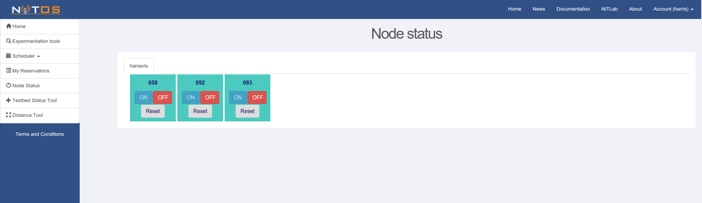

Controlling the status of the nodes¶
1. Command Line¶
In order to control the status of a node you can use the omf tell command. For example for rebooting node016:
$ omf tell -a reboot -t node016
or for turning on node016:
$ omf tell -a on -t node016
You can try omf tell –help in order to check the other available “omf tell actions”.
$ omf tell --help
If you wish to check the status of a node, you can use the omf stat command.
$ omf stat -t node016
2. Through the Portal¶
An alternative to the command line tools described above, is the Node Status tool of the NITOS Portal.
Through this tool, you can observe the status of each node you have previously reserved, turn them on, reset them, or turn them off, very easily by just clicking the corresponding buttons.
